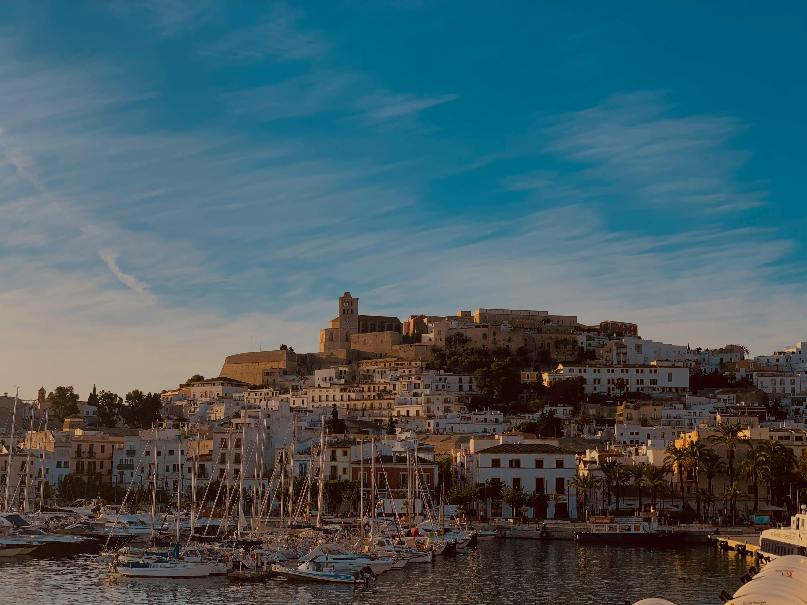
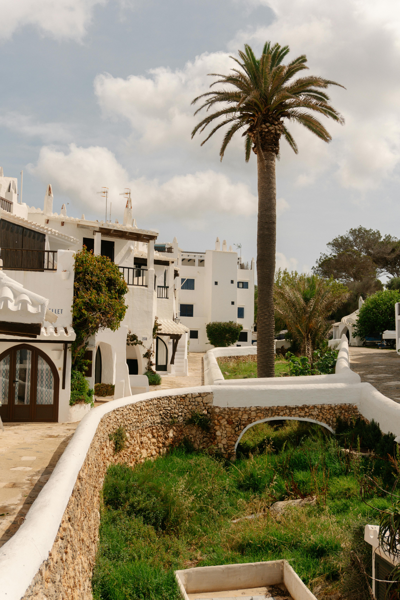
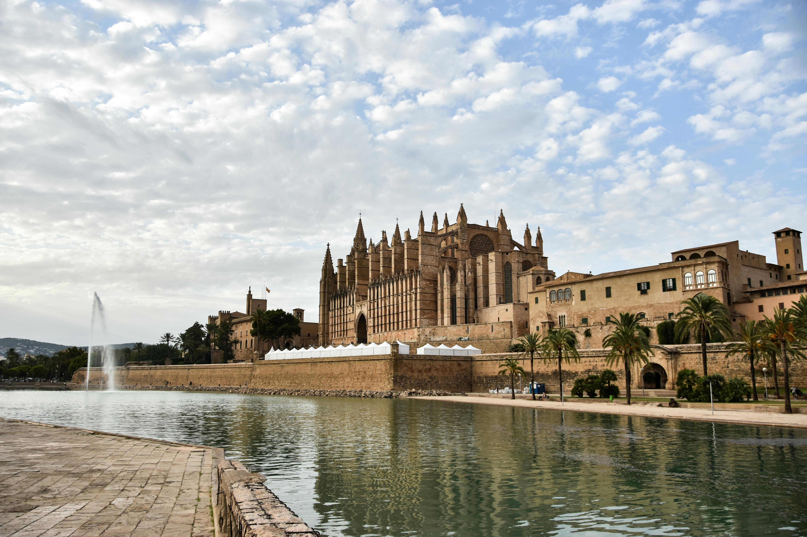
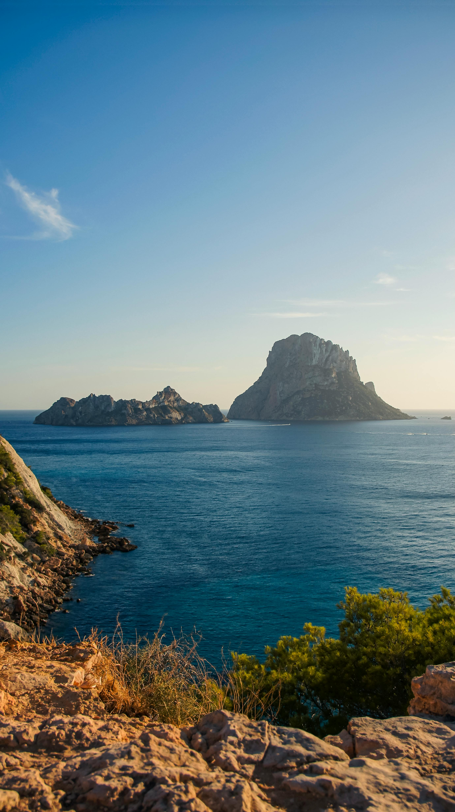

The Balearic Islands were woven through my teenage years long before Podge and I ever travelled there together. Back then, family holidays meant packing up in Ireland and heading for the Spanish islands every summer, alternating between Mallorca and Menorca every second year. Ibiza, however, was firmly off limits. In the eyes of Irish parents in the late 1990s and early 2000s, Ibiza was the wild child of the Balearics — clubbing, DJs, foam parties and all-night chaos. Definitely not somewhere respectable teenagers were being brought on family holidays. Years later, of course, came the irony: Podge had already been, and in 2025 we finally spent four nights there together and discovered an island far more beautiful, stylish and varied than the stereotype we grew up with.




The Balearics were not just places we visited. They were part of the rhythm of growing up: airport excitement, suitcases, sun cream, pool games, buffet breakfasts, postcards, evening walks and the feeling that Spain meant summer had properly started.
Mallorca was the classic family-holiday island: busier, bigger, brighter and full of resorts where Irish families seemed to be everywhere. Menorca felt quieter and slower — more scenic, more peaceful, more about coves and harbours than nightlife. Ibiza was the one we heard about but were never brought to, because it existed in parental imagination as a warning label with beaches attached.
Then, years later, we finally saw Ibiza for ourselves. And the funniest thing was that yes, the party island exists — of course it does — but so does another Ibiza: whitewashed villages, dramatic coastlines, stylish marinas, unbelievable sunsets, clear coves and an old town that feels more Mediterranean fortress than nightclub postcard.
Mallorca was the definition of the classic Irish summer holiday abroad. We stayed along the east coast and around the busy resort towns where so many Irish families holidayed at the time. It was sunshine, pool games, buffet restaurants, evening entertainment, promenade walks and that brilliant teenage sense that two weeks in Spain was the height of glamour.
Palma felt like the grown-up side of Mallorca: the huge cathedral overlooking the harbour, grand streets, cafés, shops and a completely different energy from the resort towns.
The famous caves were one of those essential Mallorca excursions — underground lakes, dramatic rock formations and that feeling of being on a proper family day out.
The mountain villages showed a very different side of the island from the resorts: stone houses, winding roads, sea views and a sense of old Mallorca away from the beach crowds.
Busy resort towns, coves, restaurants, beaches, markets and evening strolls — exactly the kind of places Irish families returned to year after year.
Menorca always felt calmer and more relaxed than Mallorca. Less commercial, more peaceful and somehow greener. It was the island of hidden beaches, turquoise coves, slow afternoons by the sea, harbour restaurants and sunset walks.
Ciutadella had beautiful old streets, a lovely marina and that relaxed Menorcan atmosphere that made evenings feel slow and easy.
Mahón's enormous natural harbour was one of the big sights — a proper working harbour with restaurants, boats and great views.
Menorca's coves were the magic of the island: clear turquoise water, cliffs, sand and that slightly quieter beach feeling compared with bigger resort islands.
The local markets were full of the kinds of things that felt like proper holiday treasure: leather sandals, jewellery, crafts and little souvenirs to bring home.
Then, years later, came the irony: both Podge and I eventually ended up going to Ibiza ourselves. Podge had already been before, but in 2025 we finally spent four nights there together, discovering that Ibiza is so much more than the stereotype we had grown up hearing about.
Yes, there were still superclubs, beach bars, sunset DJs and glamorous marina crowds. But there was also another side entirely: Ibiza Town and the cobbled streets of Dalt Vila, the harbour lined with yachts and restaurants, beautiful coves with unbelievably clear water, quieter villages inland and those famous sunsets that really do live up to the hype.
The old fortified town above Ibiza Town — cobbled streets, stone walls, views over the harbour and a much more historic side to the island.
The classic Ibiza sunset moment. Touristy? Yes. Still iconic? Absolutely. Watching the sun drop into the sea is pure Ibiza theatre.
Clear water, rocky coastline and some of the most beautiful beach views on the island.
A classic Ibiza beach stop with gorgeous water, beach-club energy and that polished grown-up island feel.
The dramatic rocky island off the coast — mystical, photogenic and one of the most memorable views in Ibiza.
Glamorous, stylish and full of yachts, restaurants and people-watching. A very different world from teenage family holidays.
Long before we cared about itineraries, boutique hotels or travel content, the Balearics were about the small things: the smell of sun cream, the excitement of pool inflatables, the nightly search for somewhere to eat, and the absolute confidence that fake sunglasses from a market stall were the height of style.
The universal language of Spanish family holidays.
Almost certainly fake, absolutely essential.
Bought from stalls, worn proudly, probably not official.
Pool entertainment peaked here.
A little bit of everything, twice, because holidays.
Every resort had one. Every family ended up on one.
Best for classic family holidays, bigger resorts, Palma, caves, mountain villages, busy promenades and lots to do.
Best for quieter holidays, coves, harbours, seafood, markets, scenic beaches and slower family evenings.
Best for sunsets, beach bars, Dalt Vila, stylish marinas, coves, nightlife if you want it and relaxed luxury if you do not.
Whether you want a classic family hotel in Mallorca, a quiet Menorca base or a stylish Ibiza stay, these Klook links are a handy place to start comparing options.
Disclosure: These are affiliate links. If you book through them we may earn a small commission at no extra cost to you.
If you want the Balearics organised for you — hotels, transfers, island experiences and less planning stress — TourRadar has Balearic Islands options worth checking out.
Disclosure: This is an affiliate link. If you book through it we may earn a small commission at no extra cost to you.
Mallorca is ideal for boat trips, cave visits, Palma tours, beach days, mountain villages and classic family holiday excursions.
Disclosure: If you book through this link we may earn a small commission at no extra cost to you.
Menorca is perfect for cove-hopping, boat trips, relaxed island tours, harbours and quieter Mediterranean exploring.
Disclosure: If you book through this link we may earn a small commission at no extra cost to you.
Ibiza is brilliant for sunset cruises, beach clubs, old town walks, boat trips, coves and seeing the stylish side of the island beyond the party stereotype.
Disclosure: If you book through this link we may earn a small commission at no extra cost to you.
Sunset views, Ibiza Town, crystal-clear coves, beach bars and the side of Ibiza we never expected to fall in love with.
Our Ibiza reel — watch before you book!
Common questions
What to pack for the Balearics
For Mallorca, Menorca or Ibiza, you want easy Mediterranean summer essentials: beach gear, sun protection, comfortable shoes, a day bag and things that make island-hopping or resort days easier.
Ideal for beach days, boat trips, markets, caves, old towns and carrying water, sunscreen and a change of clothes.
View on Amazon →Between maps, photos, beach clubs and sunset videos, your phone will get hammered. A power bank is essential.
View on Amazon →Brilliant for boat trips, coves, beach days and pool photos without panicking every time someone splashes.
View on Amazon →Old towns, castle streets, harbours, markets and clifftop viewpoints all need better footwear than flimsy flip-flops.
View on Amazon →Spain uses European two-pin plugs, so pack an adaptor for phones, cameras, straighteners and everything else.
View on Amazon →Handy for maps, taxis, restaurant searches and posting sunset spam from Ibiza without worrying about roaming.
View on Amazon →Disclosure: These are Amazon affiliate links. If you buy through them we may earn a small commission at no extra cost to you.
If you love the Balearics, these sunny island and Spain-adjacent guides are worth reading too.
Castle shows, resort nostalgia, Mount Teide and classic Canary Island sunshine.
Read the Tenerife guide →The Rock, monkeys, British oddness in the sun and views across to Africa.
Read the Gibraltar guide →Atlantic beaches, tiled streets, sunshine and easy European escape energy.
Read the Portugal guide →Choose Mallorca for classic family holiday energy, Menorca for quiet coves and slower days, or Ibiza for sunsets, old town streets, clear-water beaches and the island beyond the party reputation.
Affiliate disclosure: if you book through our links we may earn a small commission at no cost to you. We only recommend places and experiences that fit our own travel style.